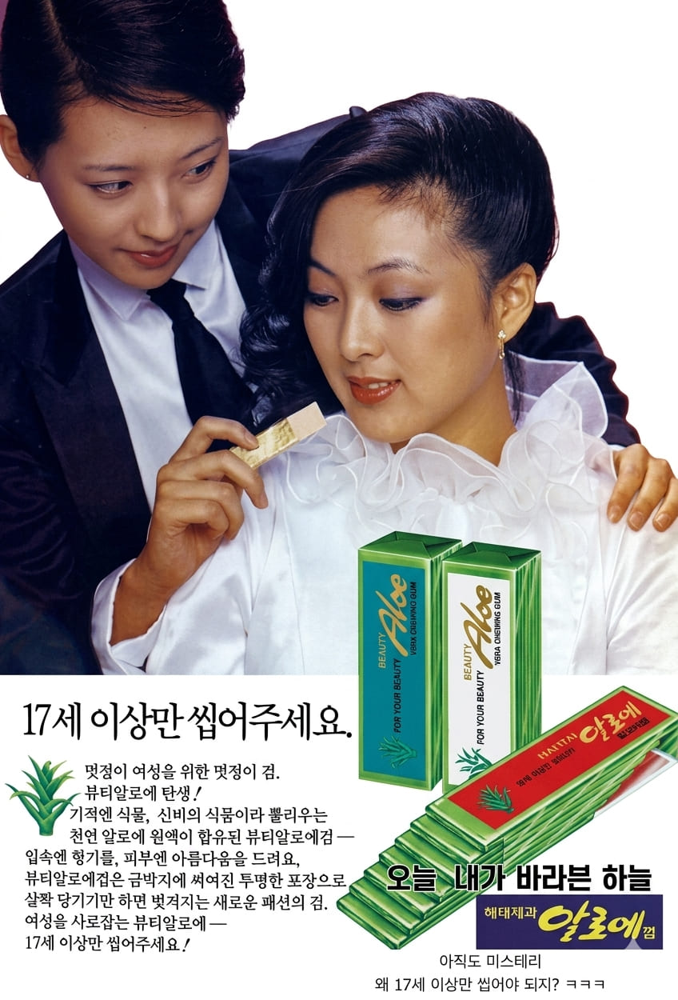

서정희
17세 이상만 씹어주세요.
멋쟁이 여성을 위한 멋쟁이 껌.
뷰티알로에 탄생 !


17세 이상만 씹어주세요.
멋쟁이 여성을 위한 멋쟁이 껌.
뷰티알로에 탄생 !
서정희는 대한민국의 모델 출신 방송인으로, 고등학교 재학 시절 CF 모델로 데뷔하며 큰 주목을 받았다. 세련된 외모와 밝고 사랑스러운 이미지로 인기를 얻었으며, 1980년대에는 해태제과와 금성사의 전속 모델로 활동하며 당대를 대표하는 광고 스타 중 한 명으로 자리매김했다. 특히 뛰어난 포토제닉함과 개성 있는 매력으로 많은 광고에 출연했다.
알로에검은 해태제과가 출시한 껌 제품으로, 당시 건강과 미용에 대한 관심이 높아지던 소비자층을 겨냥해 알로에 이미지를 활용한 제품이다. 세련되고 여성적인 콘셉트를 강조하며 기존 껌 제품과 차별화된 이미지를 구축했다.
광고는 "17세 이상만 씹어주세요"라는 독특한 문구와 함께 성숙하고 세련된 여성 이미지를 강조했다. 서정희의 도시적이고 우아한 분위기가 제품 콘셉트와 잘 어우러져 젊은 여성 소비자들에게 큰 관심을 받았으며, 당시 화제가 된 감각적인 광고 중 하나로 기억되고 있다.
1980년대는 CF 스타가 대중문화의 중심으로 떠오르던 시기였다. 기업들은 제품의 이미지를 강화하기 위해 인기 모델을 적극 기용했고, 광고 속 패션과 라이프스타일은 젊은 세대의 유행을 이끌었다. 서정희 역시 세련된 여성상의 상징으로 많은 광고에 출연하며 당시 광고 문화를 대표하는 인물로 평가받았다.